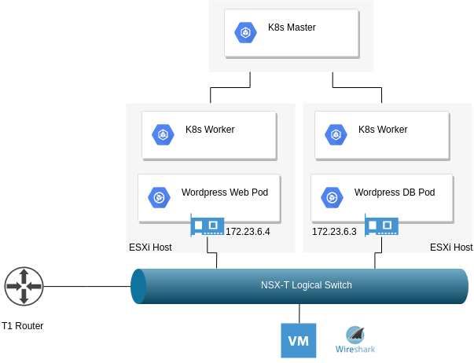
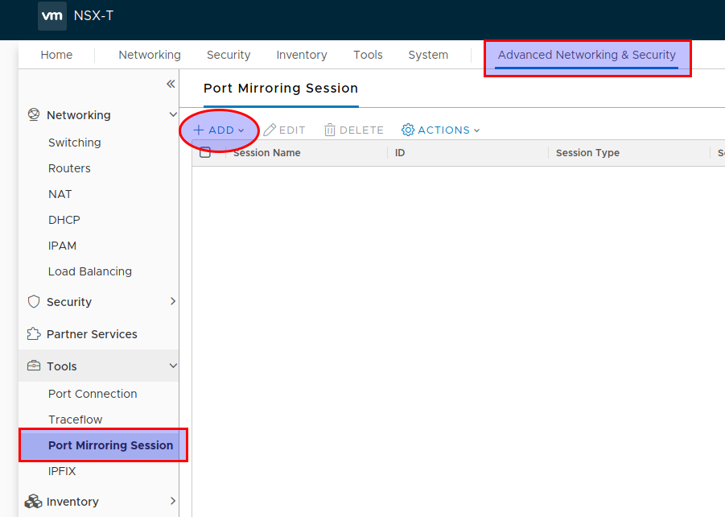
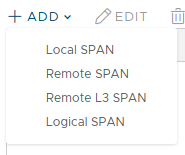
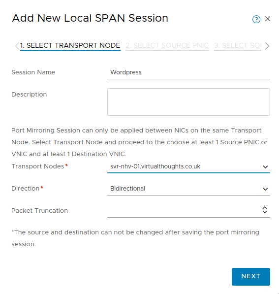
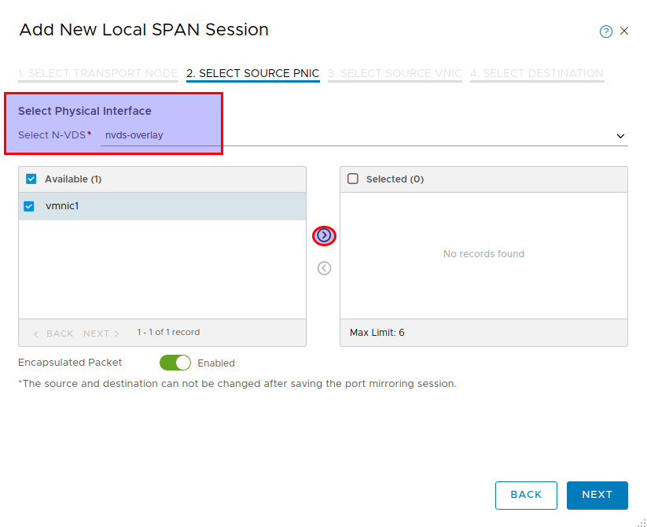
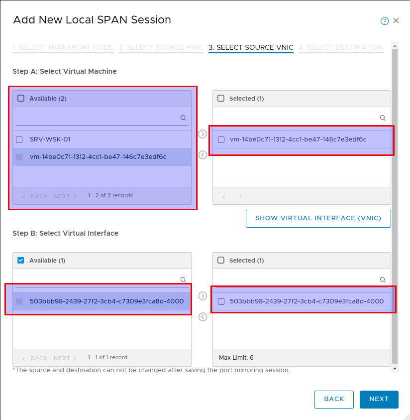
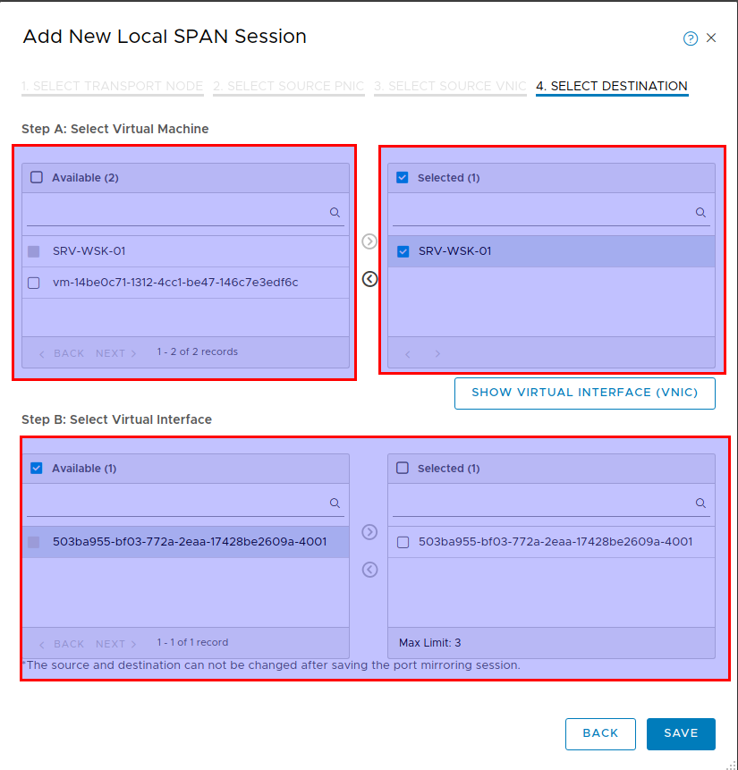
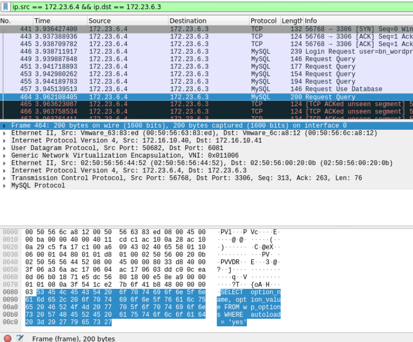

Container Packet Inspection with NSX-T
For troubleshooting (or just being a bit nosey) we have a number of tools that allow us to inspect the traffic between two endpoints. When it comes to containers however, our approach has to be adjusted slightly. When using NSX-T as a CNI, we have some of these tools available to us out of the box.
App Overview

For this example, I’ve deployed a standard Wordpress deployment consisting of a frontend (web) pod and a backend (DB) pod. The objective is to identify and capture the traffic between these pods.
Configure NSX-T Port Mirroring
Navigate to the “Port Mirroring Session” section in NSX-T via “Advanced Networking & Security” and click “Add”

Define a Local SPAN session:

Define the transport node (Source ESXI host)

Select the physical NIC(s) that participate in the n-vds configuration that we want to capture packets from.
Important: Enable “Encapsulated Packet” (Disabled by default) so we can inspect the underlying Geneve overlay packets. However, the NIC we want to mirror to must support the increased overall packet size. Therefore, adjust the MTU of the nic on the Wireshark host accordingly.

Select the source VNIC to capture from - This is the NIC of the Kubernetes worker node VM.

Finally, select the destination for traffic mirroring. For this example, it’s a NIC on a VM I have Wireshark installed on

Traffic Inspection
With all the hard work out of the way, we can simply provide a filter in Wireshark to show only packets originating from my Wordpress Web Pod and terminating at the Wordpress DB pod:

Notes:
- The overall frame size of 1600 further validates our requirement to have the recipient of the traffic mirroring having an interface configured accordingly.
- Because we previously defined the mirroring of encapsulated packets we can see the overlay information
- We can see the entire packet structure consisting of:
- Outer Ethernet (NSX-T Transport Node MAC)
- Outer IP (NSX-T VTEP IP)
- Geneve UDP
- Geneve Data
- Inner Ethernet (Pod Ethernet addresses)
- Inner IP (Pod IP addresses)
- Inner TCP (MYSQL connection)
- Inner Payload (MYSQL Query) - Highlighted